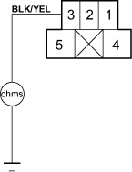
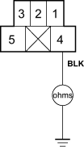

- Check the No. 14 (10 A) fuse in the under-dash fuse/relay box.
Is the fuse OK?
YES - Go to step 2.
NO - Replace the fuse and recheck. 
- Remove the fan control relay from the multi-fuse/relay box and test it.
Is the relay OK?
YES - Go to step 3.
NO - Replace the fan control relay.
- Turn the ignition switch ON (II).
- Measure the voltage between the No. 3 terminal of the fan control relay 5P socket and body ground.
FAN CONTROL RELAY 5P SOCKET

Is there battery voltage?
YES - Go to step 5.
NO - Repair open in the wire between the No. 14 fuse in the under-dash fuse/relay box and the fan control relay.
- Turn the ignition switch OFF.
- Check for continuity between the No. 4 terminal of the fan control relay 5P socket and body ground.
FAN CONTROL RELAY 5P SOCKET

Is there continuity?
YES - Repair open in the wire between the fan control relay and the A/C diode B.
NO - Check for an open in the wire between the fan control relay and body ground. If the wire is OK, check for poor ground at G301.